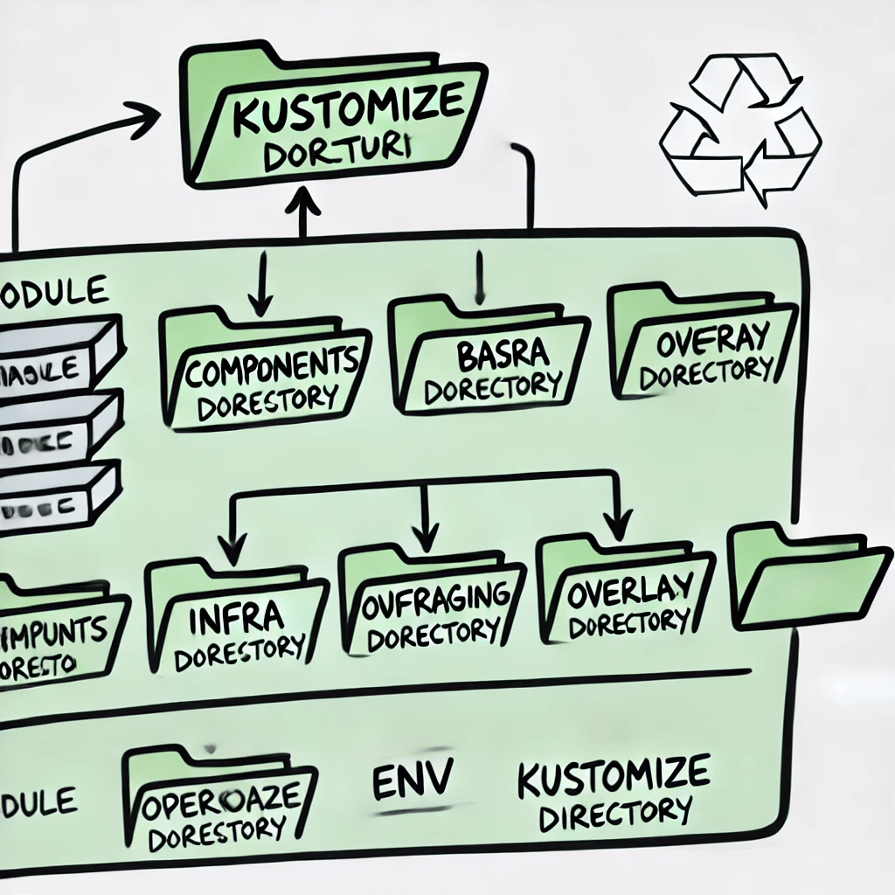

Understanding Kubernetes and OpenShift Directory Structure with Kustomize

A directory structure or component layout often used in Kubernetes or OpenShift environments, specifically when utilizing Kustomize. If you're managing a complex application across multiple environments (like development, staging, and production), having a well-organized structure is crucial for maintainability, scalability, and reusability. Let’s break down what each part of this directory structure means and how it relates to deploying applications in Kubernetes or OpenShift.
1. Module
The term "module" generally represents a broader application or service that is being deployed. In Kubernetes or OpenShift, a "module" could be considered a single microservice or a specific component of a larger, distributed application. This could include everything needed to run that service, such as configurations, deployments, services, and other Kubernetes resources.
2. Base
The "base" directory typically houses foundational configuration files that are common across all deployment environments. These configurations might include essential Kubernetes resources like Deployments, Services, ConfigMaps, and other core components that your application needs, regardless of the environment it’s deployed in. The base configurations serve as the starting point, ensuring consistency across environments.
3. Components
In this context, "components" could refer to the different parts or microservices of the module. Each component may have its specific configurations but still shares the common base. For instance, if your application consists of multiple microservices, each service might have its directory under components, containing configuration files that tailor the base setup to the specific needs of that service.
4. Infra
The "infra" directory is likely dedicated to infrastructure components required for the application or module. This could include configurations for networking policies, persistent volumes, or other cluster-level resources essential for the module to run correctly. Managing infrastructure separately within this directory allows you to maintain a clear distinction between application configurations and infrastructure dependencies.
5. Overlay
Overlays are a powerful feature in Kustomize, used to customize the base configuration for different environments. For example, you might have overlays for "dev," "staging," and "prod," each slightly modifying the base configuration to suit the specific needs of that environment. Overlays allow you to reuse the base configurations while adapting to the unique requirements of each environment, ensuring that you don’t have to duplicate configurations unnecessarily.
6. Env
The "env" directory likely refers to environment-specific configurations. This could contain further subdirectories or files that specify settings unique to each deployment environment (such as development, staging, or production). This might include things like environment variables, resource limits, or secrets that differ from one environment to another.
7. Kustomize
Kustomize is a tool native to Kubernetes that allows you to manage and customize Kubernetes resource files. The presence of a kustomize directory indicates that these configurations are being managed using Kustomize, which provides a clean and efficient way to handle variations between environments without duplicating YAML files. Kustomize enables you to overlay modifications on top of base configurations, making it easier to maintain and evolve your deployments as your application grows.
How It Relates to OpenShift
OpenShift, being a Kubernetes-based platform, benefits greatly from this structure. The modular, environment-specific configurations allow you to manage your application's deployment settings effectively across different environments. With this structure, OpenShift users can ensure that each environment (whether it’s development, testing, or production) has the appropriate configurations while maximizing reusability and minimizing configuration drift.
This organized structure is crucial for maintaining the flexibility, scalability, and maintainability of complex deployments in Kubernetes or OpenShift, especially as your application evolves or your infrastructure scales. By leveraging tools like Kustomize and adhering to a clear directory structure, you can streamline the deployment process, reduce errors, and ensure consistency across environments.
In conclusion, adopting a well-structured directory layout as illustrated not only simplifies the management of Kubernetes and OpenShift resources but also empowers teams to efficiently handle the complexity that comes with multi-environment deployments.
Imported from rifaterdemsahin.com · 2025